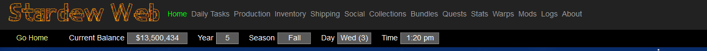
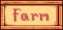
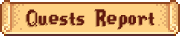
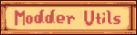
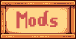

Through the use of SMAPI adds a Web Portal to the game. Provides an all-in-one place to track your progress as a Farmer in the dating world and the world of Perfection. You can customize the information displayed to show as little
or as much as you want. Some of the information that can be displayed is considered "cheats", which is a fair description. Don't consider warping cheating? Enable it.
The Portal can be configured to show you no more than the vanilla game will or it can be set to open up a whole world of information.
Day-to-day details available:
- Home Page Report - An overview of the Farmer.
-
 - Views for seeing and managing the Farm.
- - Details of what farm chores need doing today.
- - Details of Crops currently growing on the Farm.
- - Details of the livestock on the Farm.
- - Current status of all the machines on the Farm.
- - Searchable details of the contents of the various Chests and other storage containers and storage furniture.
- - Move Items between Chests. Ship or delete Items.
- - Details of the Items that have been shipped from your Farm.
- - Details of the currently in season Crops.
-
- Views detailing various Character details
- - An overview of how you stand with the other Villagers.
- - More of a modder page. Shows a list of all Events defined in the game with drilldowns to the details of the Event.
- - More of a modder page showing various details of the available game locations.
-
- A collection of Views to see how you are pgoressing in the various game goals.
- - Gives your an overview of how you are progressing in the various Collection goals.
- - Shows your progress at the Community Centre restoration or the Joja Community Development projects.
-  - Shows what Quests you have completed.
- - A View showing your progress in the various game goals.
-
- Views to modify various games settings.
- Warps - The Warp Studio allows the warping of Players and NPCs to whereever on the map.
-
Farm -
- Change Year, Season, Time and Date Settings
- Some utilities to setup a new Farm
- Spawn Trains
- Open the Everything Shop
- Add gold to your wallet
- Increase your backpack size
- Bring up the Phone Directory
- Add Animals to your Farm
- Build buidlings
-

- Console - a mini-frontend to the debug console
- Maps - Gives the details of the current Map. Work in progress
- XNB Files - Uncompresses the contents of XNB files. (Json, PNG and TMX)
-  - Lists all of the currently installed mods. If any of the mods are leveraging the Stardew Web Framework, there will be a link displayed to view the mods custom content information.
The Buttons
| Go Home | Warps the player to their front door. It can be enabled/disabled in the configuration view. |
| Sleep |
Puts the Player to sleep wherever they are. Obviously a cheat. It can be enabled/disabled in the configuration view.
Note: if you push the button in your home you will have to exit via the door to complete the
triggering of the sleep cycle.
|
| Stop/Star Time |
Starts or stops time in the game.
|
| Normal/Invincible Mode |
Enable or disable 'Invincible' mode where you will take no damages from Monsters.
|
| Stardew Search |
A popup that allows the Player to look objects up via their Name or Id. If an asterisk (*) is used the a wild card search is run. Without the asterisk a fuzzy search is run.
It can be enabled/disabled in the configuration view.
|
FAQs